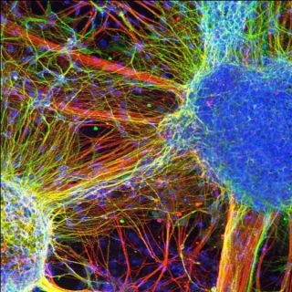

 Schizophrenia is a serious mental illness that affects how a person thinks, feels, and behaves. People with schizophrenia may seem like they have lost touch with reality, which can be distressing for them and for their family and friends. The symptoms of schizophrenia can make it difficult to participate in usual, everyday activities, but effective treatments are available. Many people who receive treatment can engage in school or work, achieve independence, and enjoy personal relationships.
It’s important to recognize the symptoms of schizophrenia and seek help as early as possible. People with schizophrenia are usually diagnosed between the ages of 16 and 30, after the first episode of psychosis. Starting treatment as soon as possible following the first episode of psychosis is an important step toward recovery. However, research shows that gradual changes in thinking, mood, and social functioning often appear before the first episode of psychosis. Schizophrenia is rare in younger children. Schizophrenia symptoms can differ from person to person, but they generally fall into three main categories: psychotic, negative, and cognitive.
Most people with schizophrenia are not violent. Overall, people with schizophrenia are more likely than those without the illness to be harmed by others. For people with schizophrenia, the risk of self-harm and of violence to others is greatest when the illness is untreated. It is important to help people who are showing symptoms to get treatment as quickly as possible.